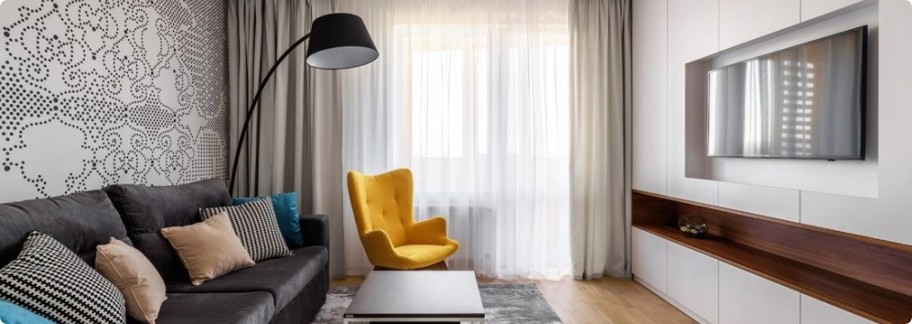

Вітальня – це основна кімната у кожному будинку. Саме вона служить для
прийому гостей, проведення часу всією сім'єю та просто для відпочинку
у приємній теплій атмосфері. Оформляючи свій будинок та вітальню зокрема,
всі намагаються зробити її максимально зручною, комфортною та красивою.
Основним та центральним елементом оформлення вітальні, як і будь-якої
іншої кімнати, є м'які меблі.
Будь-які меблі для вітальні повинні бути не тільки стильними і красивими,
але і функціональними. На таких меблів має бути зручно та приємно
відпочивати та приймати гостей. Однак сьогодні існує величезна
різноманітність найрізноманітніших м'яких меблів для вітальні, яка
підходить для кімнат різних розмірів і форм. На чому варто зупинити свій
вибір? Як краще оформити свою вітальню, щоб вам було комфортно, а гості
хотіли приходити до вас знову та знову?
На сайті інтернет магазину Кровато представлено велику
різноманітність
м'яких меблів для вітальні, серед яких кожен зможе вибрати для себе
найбільш вдалий варіант. У нас ви знайдете:
- Прямі дивани. Такі дивани вважаються класикою. Вони підходять для
віталень будь-яких форм та розмірів. Прямий диван виглядає стильно та
лаконічно, на ньому зручно відпочивати, приймати гостей або навіть
спати. Прямі дивани можуть стояти біля стіни, так і в центрі кімнати.
Багато моделей прямих диванів легко розкладаються, перетворюючись на
повноцінне спальне місце. Також більшість диванів мають великі та місткі
ніші, які є додатковим місцем для зберігання;
- Кутові дивани Кутові дивани вважаються найзручнішими та комфортнішими.
Вони ідеально підійдуть для приємного проведення часу в колі сім'ї
або друзів. Кутові дивани в основному використовуються для оформлення
великих віталень, так як вони займають багато місця, і для кімнат з
невеликою площею просто не підійдуть;
- Тахти. Тахта - це одна з варіацій дивана, але стильніша і
мінімалістична. Виглядають тахти дуже незвично і можуть підійти для
будь-якого інтер'єру. Також тахти більше ніж звичайні дивани
підходять для сну, оскільки в їх основі не пружинні блоки, а
дерев'яні ламелі або ортопедичні матраци;
- Крісла. Крісло – це особливий предмет інтер'єру. Сучасні дизайнери
не часто використовують його, вважаючи застарілим, проте саме крісла
створюють особливий затишок та комфорт у будь-якій кімнаті. Сьогодні
існує величезна різноманітність класичних та сучасних моделей крісел, що
дозволяє кожному відшукати ідеальне крісло для свого будинку;
- Набір меблів. Комплект м'яких меблів – це відмінне рішення для тих,
хто хоче меблювати свою вітальню не лише диваном, а й кріслами. Існують
набори з одним або двома кріслами, із прямими або кутовими диванами.
Основна перевага будь-якого готового меблевого гарнітура – це те, що
предмети меблів у ньому ідеально поєднуються один з одним, і вам не
потрібно буде витрачати свій час та сили на їхній підбір.
Підбір м'яких меблів для вітальні – це заняття непросте. Однак при
виборі та покупці меблів для своєї вітальні пам'ятайте, що якісні
м'які меблі повинні бути не тільки красивими, але й зручними для вас
і всіх мешканців вашого будинку.